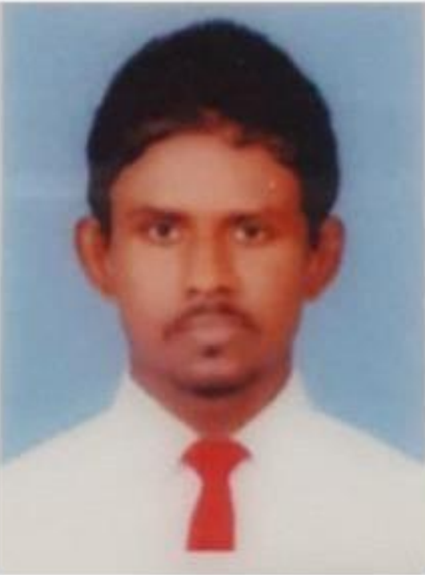

PERSONAL DETAILS
Name in full : Buwaneka Shyamal Hettige
Gender : Male
Residential address : No 75, Kotikawatta road, Gothatuwa new town, Angoda
Permanent Address : No 75, Kotikawatta road, Gothatuwa new town, Angoda
Date of Birth : 10/05/1993
National ID No. : 931310712V
Marital Status : Single
Interests : Seeking knowledge and experience on experimental and genetic science
SKILL SUMMARY
General skills related to laboratory equipment handling research planning, data analyzing using Microsoft Excel and statistical packages (SPSS)
Self-motivation
Adaptable to changing environments
Teamwork skills and interpersonal skills developed through, social work and extracurricular activities
Ability of quick and correct decision making
EDUCATION
2017 to 2019 : Studied Bachelors in Biomedical Science in Management and Science Institute, Colombo 03. (under the Management and Science University Malaysia)
2015 to 2017 : Studied Diploma in Biomedical Science in Management and Science Institute, Colombo 03.
2012 : G.C.E. Advanced Level - Nalanda Collage, Colombo 10 in Biology
2009 : G.C.E. Ordinary Level - Nalanda Collage, Colombo 10.
WORKSHOPS, CONFERENCE AND PROFESSIONAL TRAINING
2017 : Participated in a workshop for scientific writing conducted by Colombo Campus Science Faculty.
2017 : Professional laboratory training in Browns Hospital, Ragama
2018 : Conduct a research under the topic of KNOWLEDGE AND PRACTICES REGARDING CHILDHOOD ASTHMA AMONG PARENTS OF CHILDREN AGED 3 - 5 YEARS WITH ASTHMA ATTENDING PAEDIATRIC CLINICS AT LADY RIDGEWAY HOSPITAL, COLOMBO.
2019 : Professional laboratory training in MSU Malaysia. (Management and Science University)
2019 : Joined and worked on a research project titled “ INVESTIGATION OF ANTIMICROBIAL PROPERTIES OF LEAVES AND BARK OF DRUMSTICK TREE (MORINGA OLIFERA) AND IT'S POTENTIALS AS AN INGREDIENT TO IMPROVE SHELF LIFE OF SELECTED FOODS".
CONTACT INFORMATION
Phone no : 0715386909
Email : buwanekashyamal@gmail.com